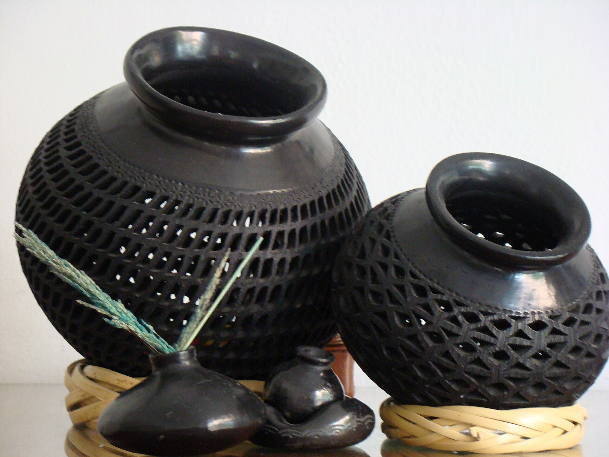
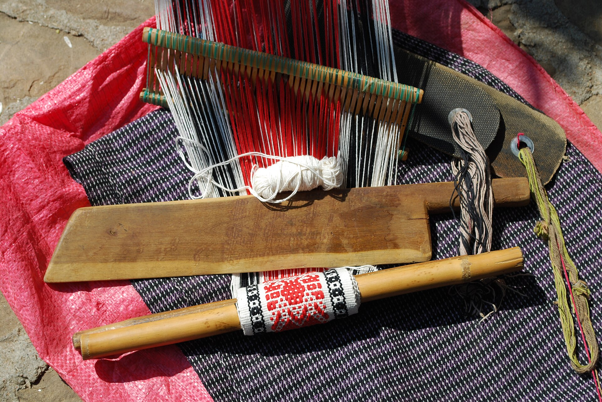
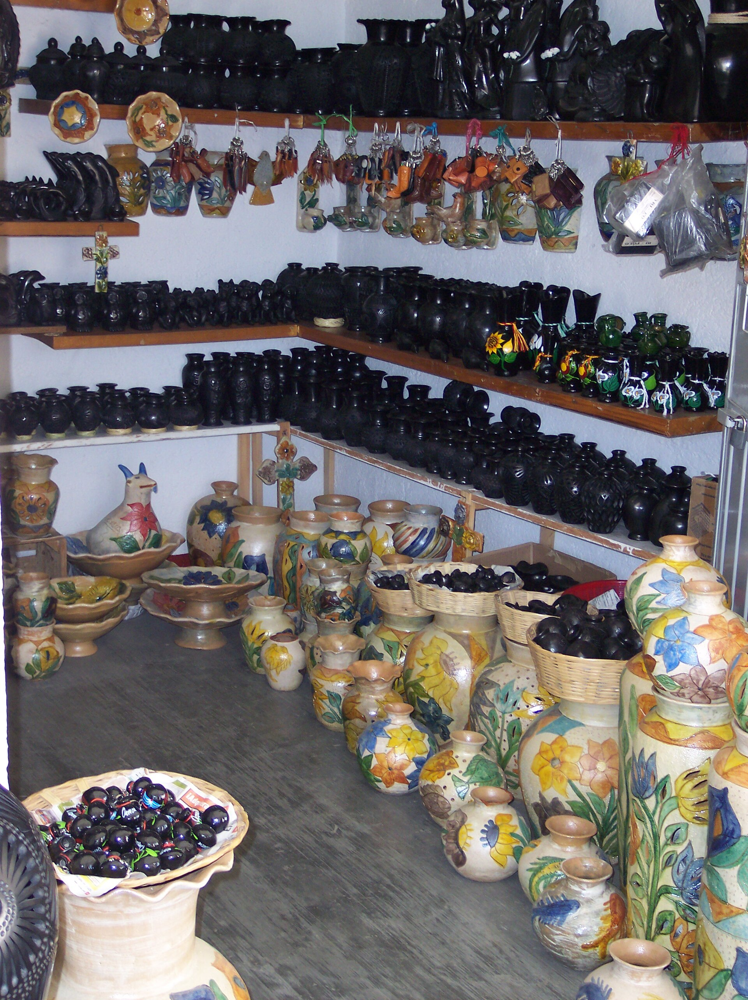
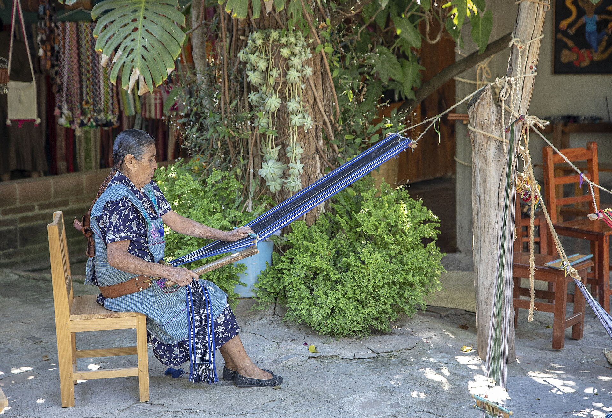
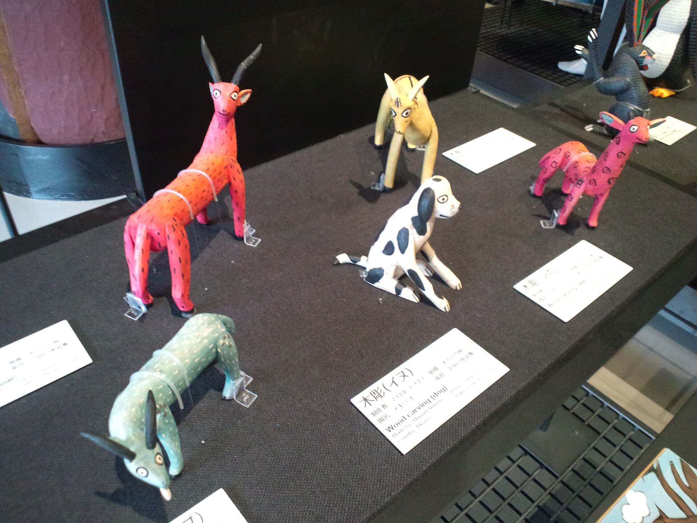
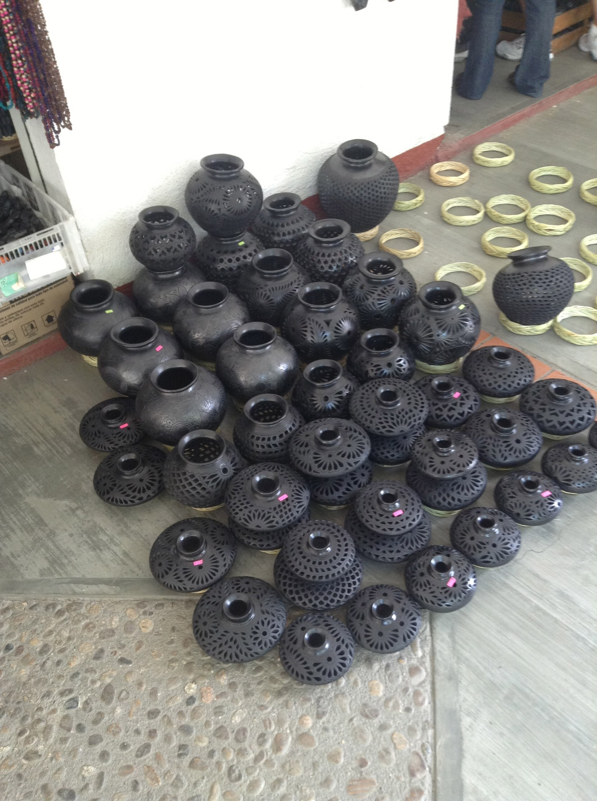
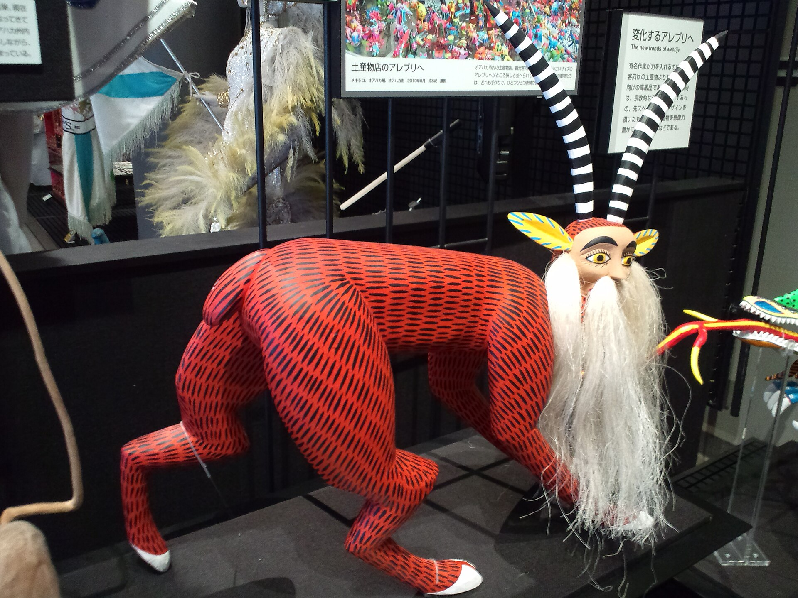

Cada pieza guarda

su origen.
Una galería de artesanía oaxaqueña. Cada obra llega con su historia, su proceso y el nombre de quien la hizo.
Ver la galería
Piezas
Pasa el cursor sobre una imagen para verla en gris.
-

Barro negro y barro pintado San Bartolo Coyotepec, Oaxaca -

Telar de cintura Oaxaca -

Alebrijes de madera Oaxaca, exhibidos en Osaka -

Ollas de barro negro San Bartolo Coyotepec, Oaxaca
Nosotros
Unimos cada pieza con quien la hizo, cómo y dónde. La historia viaja en una etiqueta NFC, junto al objeto.
Hazte miembro, pues.
Entras a la comunidad que cuida el oficio. Recibes novedades de las piezas, de quienes las hacen y de los talleres que visitamos, y ayudas a que el artesano se quede con lo que vale su trabajo.
Quiero ser miembro